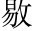

維治平英宗年號。四年七月日，具官歐陽修，謹遣尚書都省令史李異。至於太清，以清酌庶羞之奠，致祭於亡友曼卿之墓下，而吊之以文曰：
嗚呼曼卿一呼。！生而為英，死而為靈生死並點。。其同乎萬物生死，而復歸於無物者，暫聚之形；不與萬物共盡，而卓然其不朽者，後世之名許其名傳後世，單就死一邊說。。此自古聖賢莫不皆然，而著在簡冊者昭如日星引古聖賢一證，言其名之必傳。十九字，一句讀。。
嗚呼曼卿二呼。！吾不見子久矣，猶能彷彿子之平生喚起下文。。其軒昂磊落，突兀崢撐。嶸宏。，而埋藏於地下者十六字，一句讀。，意其不化為朽壤，而為金玉之精。不然，生長鬆之千尺，產靈芝而九莖恆。○此從生前想其死後必當化為金玉、為長鬆、為靈芝，必不與萬物同為朽壤也。○中間用「不然」一折，更快。。奈何荒煙野蔓，荊棘縱宗。橫，風悽露下，走磷鄰。飛螢磷，鬼火。？但見牧童樵叟，歌吟而上下，與夫驚禽駭獸，悲鳴躑擲。躅逐。而吚伊。嚶悲其今日之墓。。今固如此，更千秋而萬歲兮，安知其不穴藏狐貉與鼯鼪悲其後日之墓。？此自古聖賢亦皆然兮，獨不見夫累累乎曠野與荒城又牽「自古聖賢皆然」，呼應有情。！
嗚呼曼卿三呼。！盛衰之理，吾固知其如此臨了又一折。，而感念疇昔，悲涼悽愴，不覺臨風而隕涕者，有愧夫太上之忘情自述傷感，欷歔欲絕。。尚饗！
篇中三提曼卿，一嘆其聲名卓然不朽，一悲其墳墓滿目淒涼，一敘己交情傷感不置。文亦軒昂磊落，突兀崢嶸之甚。